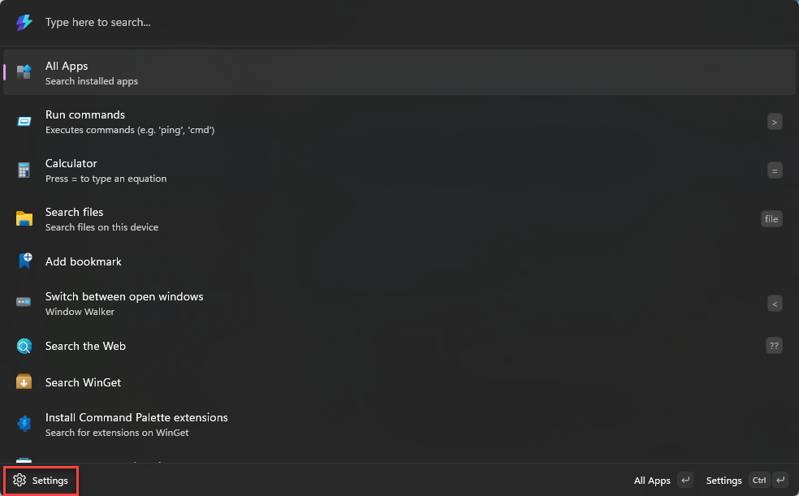

PowerToys Command Palette utility
PowerToys Command Palette is a quick launcher utility that allows you to easily access all of your most frequently used commands, apps, and development tools from a single, fast solution. This customizable and extensible tool is designed for Windows power users and serves as the successor to PowerToys Run.
To use the Command Palette, select Win+Alt+Space and start typing! (Note that the keyboard shortcut can be changed in the settings window.)
Important
For this utility to work, the Command Palette must be enabled and running in the background.

Features
Command Palette features include:
- Search for applications, folders or files
- Run commands using
>(for example,> cmdwill launch Command prompt, or> Shell:startupwill open the Windows startup folder) - Switch between open windows (previously known as Window Walker)
- Do a simple calculation using calculator
- Add bookmarks for frequently visited webpages
- Execute system commands
- Open web pages or start a web search
- Rich extensions to add additional commands and features easily
Settings
You can open the settings page by using the Settings button in the Command Palette:

The following general options are available on the Command Palette settings page.
| Setting | Description |
|---|---|
| Activation key | Define the keyboard shortcut to show/hide the Command Palette. |
| Go home when activated | When the Command Palette is activated it will return to the home page. |
| Highlight search on activate | The previous search text will be selected when the Command Palette is opened. |
| Preferred monitor position | Choose the preferred monitor for the Command Palette to open on. The default setting is Monitor with mouse cursor. |
| Show app details | App details are automatically expanded when displaying an app as a result. |
| Backspace goes back | Typing Backspace will take you back to the previous page. |
| Single-click activation | Activate list items with a single click. When disabled, single clicking selects the item and double clicking activates it. |